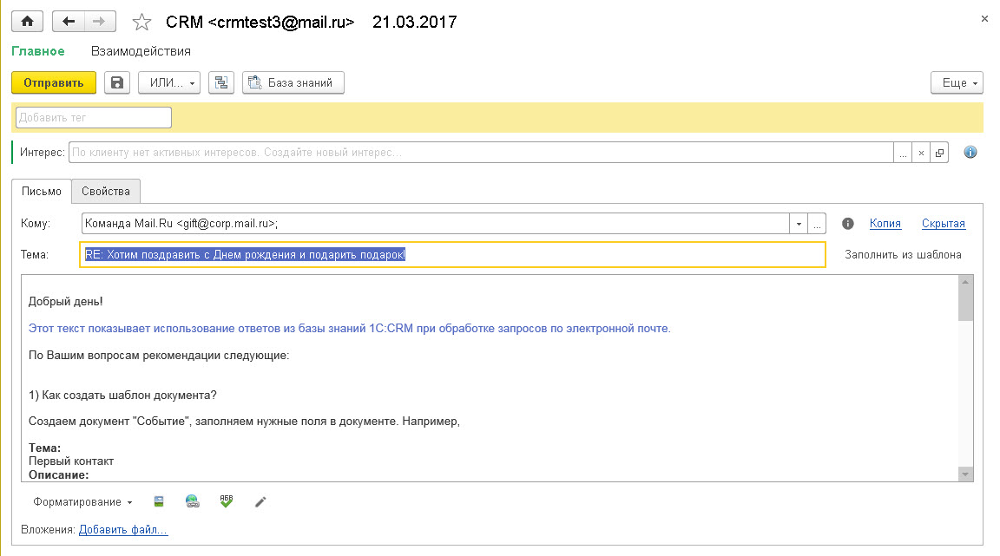
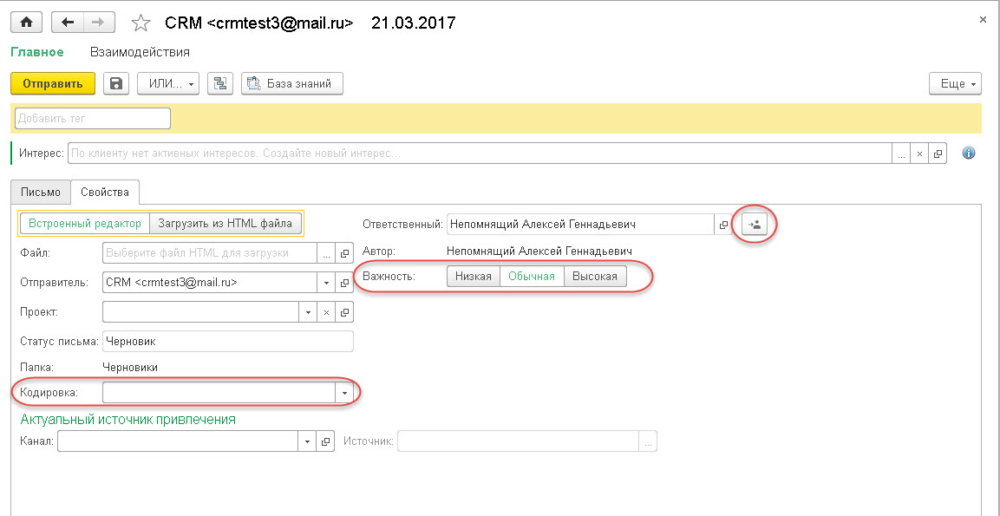
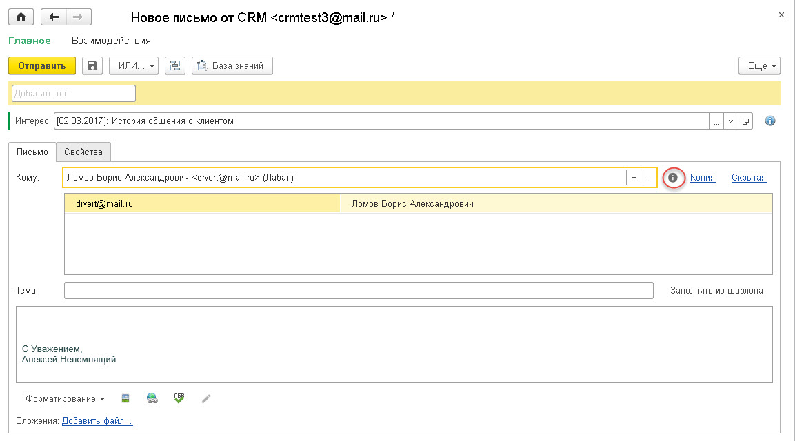
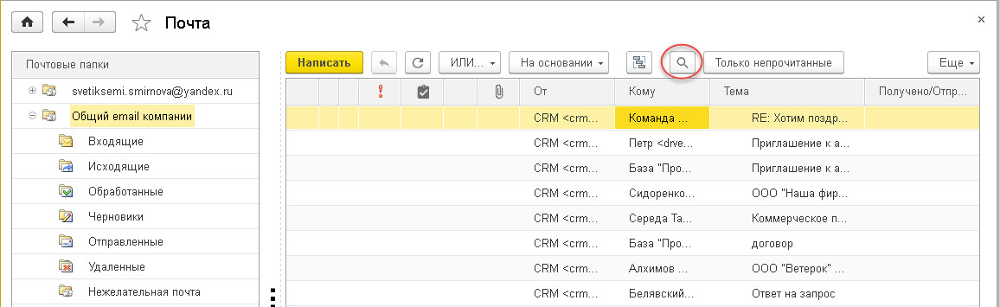
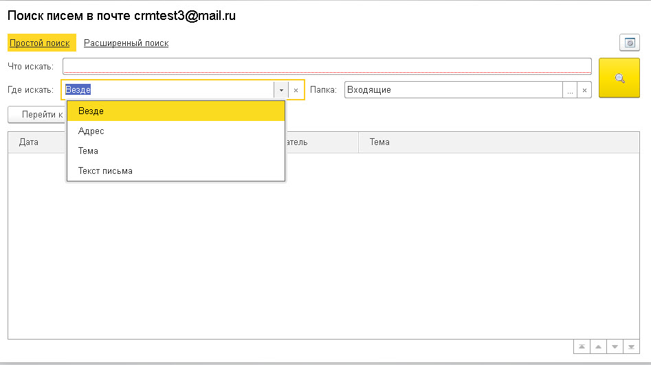
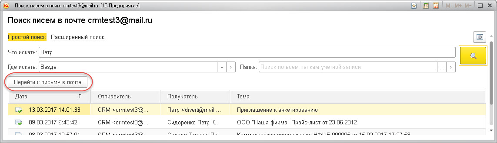
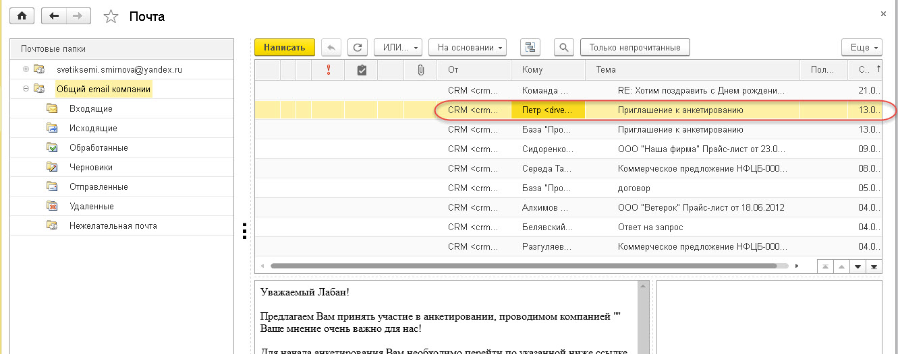
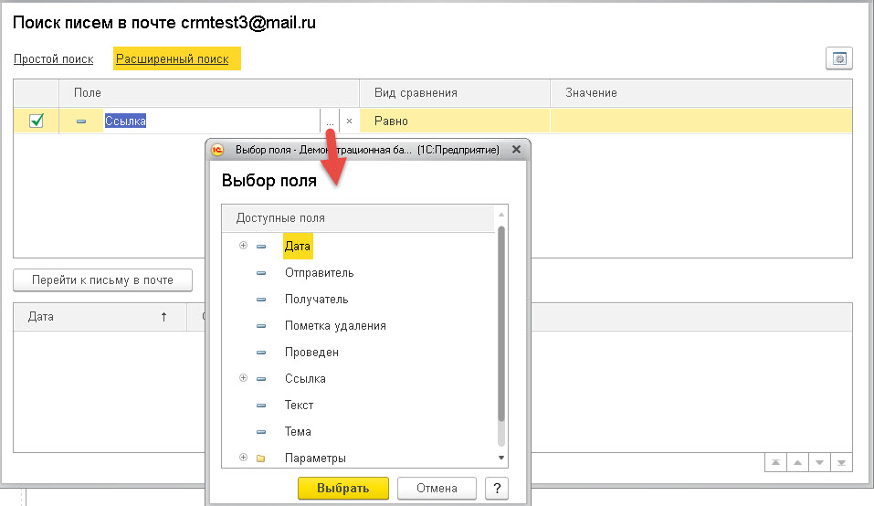

В решении используется встроенный почтовый клиент (раздел «Главное»). Рабочее место «Почта» предназначено для просмотра и ведения электронной переписки с клиентами и сотрудниками по доступным учетным записям электронной почты.
Встроенный почтовый менеджер использует возможности платформы 1С:Предприятия 8, основанные на протоколах SMTP, POP3. Вся переписка с клиентами, контактными лицами и пр., а также их контактная информация сохраняются непосредственно в информационной базе.


При вводе учетной записи большинство параметров подставляется программой по умолчанию в зависимости от настроек почтовых серверов учетной записи электронной почты.
Для системных учетных записей рекомендуется запомнить пароль, для того чтобы программа могла рассылать сообщения от такой учетной записи без участия пользователя.
В диалоговой части данной формы указываются следующие реквизиты:
· Наименование учетной записи. Необходимо сформулировать наименование так, чтобы оно кратко характеризовало учетную запись, отражало назначение данной учетной записи или ее владельца, например, «Служба техподдержки». Именно наименование будет появляться в различных списках.
· Адрес электронной почты. Адрес электронной почты учетной записи в формате User@Server.net.
· Имя отправителя писем. Имя владельца учетной записи, которое будет указываться в корреспонденции, при этом оно может отличаться от имени пользователя в программе, например, пользователь «Администратор», а его имя «Иван Иванович».
· Ответственный сотрудник.
При помощи установки флажков «Используется для отправки/получения писем» задается как будет использоваться учетная запись.
Установка флажка «Разрешить просмотр писем всем пользователям системы» делает доступным просмотр писем данной учетной записи в различных журналах и списках всем пользователям системы, без доступа к учетной записи. При этом будет доступен только просмотр, без возможности изменения, ответа или пересылки письма.
На закладке «Отправка писем» указываются настройки сервера исходящей почты.
· Имя пользователя учетной записи в формате User@Server.net. Оно может отличаться от основного, в этом случае оно будет предназначено только для отправки писем.
· Пароль учетной записи (если он не введен, программа запросит его при отправке писем).
· Безопасная проверка пароля. При установке флажка используется шифрование учетных данных при аутентификации на сервере.
· Сервер — указывается адрес SMTP-сервера, например, «smtp.Server.net».
· Порт — порт компьютера для отправки почтовых сообщений.
· Использовать безопасное соединение (SSL). При установке флажка используется шифрование соединения (SSL).
На закладке «Получение писем» указываются настройки сервера входящей почты.

· Имя пользователя учетной записи в формате User@Server.net. Оно может отличаться от основного, в этом случае он будет предназначен только для получения писем.
· Пароль учетной записи. Если он не введен, программа запросит его для получения писем.
· флажок «Безопасная проверка пароля». При установке флажка используется шифрование учетных данных при аутентификации на сервере.
· Сервер — указывается адрес POP3 сервера, например, «imap.Server.net».
· Протокол сервера входящей почты: POP или IMAP.
· Порт компьютера для получения входящей почты.
· Флажок «Использовать безопасное соединение (SSL)». При установке флажка используется шифрование соединения (SSL).
На закладке «Прочие настройки»:
· задается длительность ожидания сервера (время ожидания сервера до разрыва соединения);
· выбираются подписи исходящего/пересылаемого письма (из справочника «Подписи электронных писем»).

Подписи можно по умолчанию располагать в конце писем, установив на закладке соответствующий флажок.
На закладке «Пользователи» задается список сотрудников, которым разрешена работа с письмами данной учетной записи. Установкой флажков определяются доступные действия пользователей с данной учетной записью.

При помощи кнопки 
По нажатию гиперссылки  формы учетной записи электронной почты открывается диалоговое окно для работы с папками электронных писем. Папки можно добавить, переместить, скопировать и др.
формы учетной записи электронной почты открывается диалоговое окно для работы с папками электронных писем. Папки можно добавить, переместить, скопировать и др.
По гиперссылке 

При выполнении заданных условий письмо автоматически будет распределено в папку, заданную пользователем.
Электронное письмо.

Каждое электронное письмо может находиться в одном из состояний:
· отправленное;
· исходящее;
· черновик;
· удаленное.
Данная характеристика устанавливается автоматически и не может быть изменена пользователем. Состояние изменяется при совершении пользователем операций с письмом, таких, как создание и сохранение письма, его удаление, отправка или получение.
Все входящие письма являются полученными. Статус черновик — это сохраненное, но еще не готовое к отправке письмо.
Исходящее письмо — письмо, в отношении которого пользователь отдал команду «Отправить», но которое по тем или иным причинам еще не было отправлено на почтовый сервер (например, у пользователя нет прав на отправку писем или нет связи с почтовым сервером). В состоянии Исходящее письмо еще может быть отредактировано.
Удаленное письмо — это письмо, получившее пометку На удаление. Удаленное письмо перемещается в группу «Удаленные». Пока это письмо не удалено безвозвратно (например, командой «Удалить помеченные объекты» в разделе «Общие настройки»), с него может быть снята пометка На удаление. При этом письмо будет возвращено в группу, из которой было удалено.
В полях «Кому» и «Копия» (для исходящих писем) для быстрого поиска адресата пользователь может указать начало имени или адреса электронной почты адресата. После короткой паузы программа сама попытается найти получателя среди записанных в информационной базе электронных адресов по введенным первым символам. При единственном найденном варианте строка получателя автоматически преобразуется к виду:
Имя получателя <Адрес электронной почты получателя>.
Имя получателя может отсутствовать в информационной базе; тогда отображается только адрес электронной почты получателя (например, если адрес электронной почты введен вручную пользователем).
Если с введенными параметрами найдено несколько получателей, то при нажатии клавиши Enter или Tab пользователь имеет возможность выбрать получателя из представленного списка.
Когда письмо требуется отправить нескольким получателям, их адреса можно указать через запятую.
В поле «Тема» следует ввести тему письма.
В случае, когда входящее или исходящее письмо нечитабельно, пользователь может изменить его кодировку на закладке «Свойства» такого письма.

Также на закладке «Свойства» указывается важность письма («Низкая», «Обычная». «Высокая»).
При помощи кнопки «Перенаправить» письмо можно перенаправить любому пользователю системы (выбирается из списка пользователей).
На закладке «Письмо» в форме исходящего письма содержатся сведения об основных реквизитах письма.
При помощи кнопки 
Адреса электронной почты, которые присутствуют в электронном письме, автоматически сопоставляются с имеющимися клиентами (их контактными лицами), пользователями и физическими лицами. Сопоставление происходит поиском по клиентской базе, и в случае наличия у найденного объекта такого же электронного адреса, найденный объект будет подставлен в письмо. Если в базе имеется несколько объектов с одним и тем же электронным адресом — будет подставлен первый из найденных объектов с этим
адресом.

С целью ведения дополнительной аналитики для клиентов, Интересов и Электронных писем по ним реализован механизм Тегов. Теги задаются в пределах подразделения (в его карточке) и доступны по иерархии вниз для других подразделений. Например, можно назначить единый тег для всех подразделений компании установив его в самом верхнем подразделении. Дополнительно в подразделении можно вести свой набор тегов, который будет доступен только для этого подразделения и не "засорять" теги для других подразделений. При работе с Электронным письмом пользователь может добавлять в него теги, но только из списка доступных для данного подразделения(в том числе по иерархии вверх).
Важно! Создать новый тег для подразделения может только руководитель этого подразделения.
Чтобы указать тег в документе «Электронное письмо», сотруднику необходимо выбрать значение в списке всех доступных тегов (список открывается по команде «Выбрать» контекстного меню поля «Добавить тег» ) или найти тег вводом первых символов его названия. Все назначенные Электронному письму теги будут отображаться справа от поля «Добавить тег».
Все Входящие электронные письма при получении в почте привязываются автоматически к активному интересу (если такой есть) по клиенту/потенциальному клиенту (если он найден по адресу email). Согласно методике работы в решении, исходящие электронные письма формируются из Интереса. В этом случае теги для письма переносятся из Интереса.
На форме документа «Электронное письмо» пользователь может вручную сделать привязку письма к более, чем одному Интересу. После выбора Интереса, данное «Электронное письмо» появится в этом Интересе на закладке «Документы». Таким образом все письма привязываются к относящимся к ним Интересам и отображаются в них на закладке "Документы".
Поиск писем
В Почте есть возможность поиска писем.

В почтовом менеджере представлено два варианта поиска писем «Простой поиск» и «Расширенный поиск».
В форме «Простой поиск» поиск осуществляется в Адресе электронной почты, Теме, Тексте письма или везде если не выбрано где искать. А также в выбранной папке учетной записи, или если папка учетной записи не выбрана, то по всем папкам.

Найденное письмо или письма отображаются ниже в таблице.

По кнопке «Перейти к письму в почте» курсор мыши фиксируется на данном письме в почте.

В форме «Расширенный поиск» - поиск можно осуществить по одному из выбранных полей. Выбрать Вид сравнения и прописать значение.
